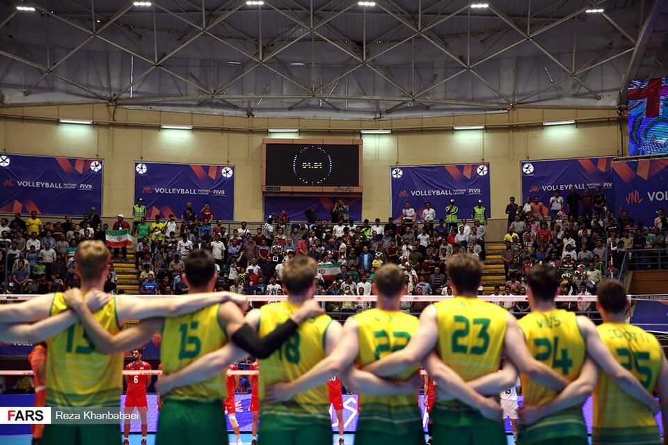
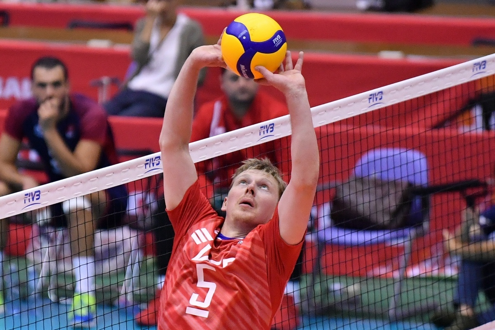
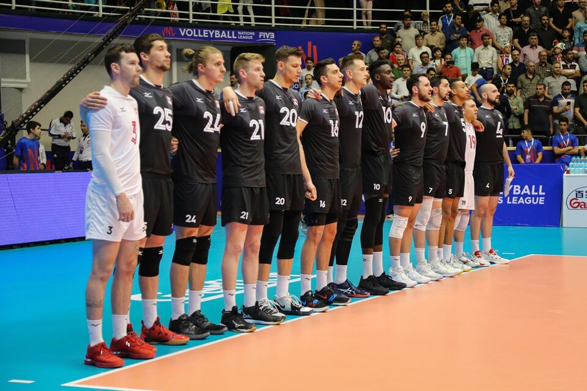

Игроки и роли
Позиции на площадке
У каждого игрока есть основная роль, но в защите и атаке команда действует согласованно и постоянно меняет расстановку.

Передняя линия
У сетки играют игроки зон 2, 3 и 4. Они участвуют в блоке и чаще завершают атаки.
- Связующий организует атакующие действия:
- выбирает нападающего;
- направляет точную передачу.
- Центральный блокирующий закрывает направление атаки соперника.
- Доигровщик принимает, атакует и помогает в защите.
Задняя линия и либеро
Игроки задней линии помогают принять подачу и защищают площадку от атаки. Либеро специализируется на защите и приёме, носит форму контрастного цвета и не выполняет блок.
- После выигрыша права подачи команда перемещается на одну позицию по часовой стрелке.
- Перед подачей игроки должны соблюдать порядок расстановки.
- После удара по подаче игроки могут свободно перемещаться по своей стороне.
Роли игроков
| Роль | Задача | Ссылка |
|---|---|---|
 Связующий | Выбирает нападающего и выполняет передачу для атаки. | Передняя линия |
 Либеро | Помогает команде в приёме и защите. | Правила розыгрыша |